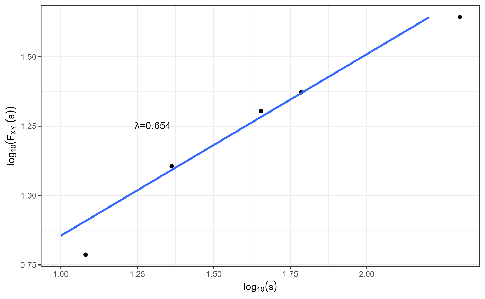

Plot of Detrended Cross Correlation Analysis
Usage
plotdcca(dcca, seg = FALSE, point = NULL, main = NULL)
Arguments
- dcca
is a fracreg object
- seg
logical. If TRUE, alpha DCCA will be calculated in 2 segments
- point
indicate in which point segmented alpha DFA should be calculated
- main
plot title
Value
a plot of Detrended Cross Correlation Analysis.
Examples
# 'dcca' is a list with the box scales and the detrended covariance F^2_XY(s)
dcca <- list(s = c(10, 20, 40, 80, 160), Fxy = c(50, 130, 320, 780, 1900))
plotdcca(dcca)
#> `geom_smooth()` using formula = 'y ~ x'
